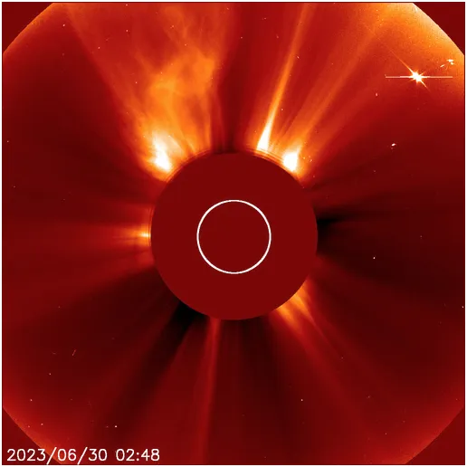
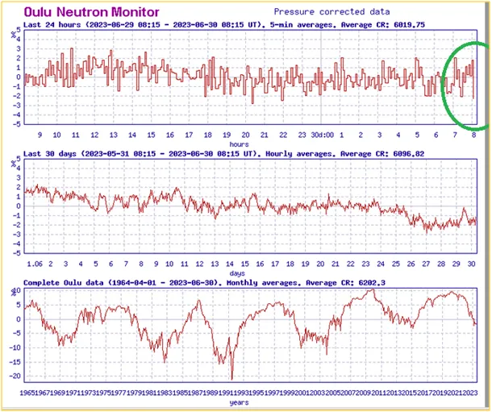
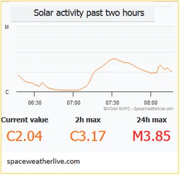

Uwaga, w kosmosie rodzą się ciągle nowe gwiazdy, mimo że nie ma ministerstwa kosmosu i programu “Galaktyka+”..
Gwałtowny spadek liczby neutronów na powierzchni Ziemi dziś rano oznacza, że jonosfera zareagowała na coś z kosmosu. Najczęściej są to podmuchy wiatru słonecznego. I faktycznie, na drugim grafie mamy potężną eksplozję plazmy, tzw. flarę na Słońcu. Z nocy czasu UT mamy zdjęcie tej eksplozji.

Czerwone kółko to blaszana czarna przysłona, aby Słońce nie oślepiało kamery. Wiemy, że Słońce jest 109 razy większe od Ziemi, która ma +-12, 7 tyś. km średnicy. Wychodzi, że słonce ma +-1, 4 mln km średnicy. Wyrzuty plazmy mają, więc na zdjęciu wysokość rzędu miliona km. Aby pokonać 1 mln km światło potrzebuje ponad 3 sekund. Do Ziemi ze Słońca światło podróżuje ok. 8 minut. Słońce, jakie widzimy od 8 minut nie istnieje, zawsze widzimy przeszłość. Najbliższa Ziemi gwiazda Proxima Centauri jest odległa o 4, 24 lat świetlnych. Gdyby ta gwiazda np. zgasła w tej chwili dowiemy się o tym za 4 lata i 3 miesiące. Najdalsze gwiazdy widziane gołym okiem są oddalone ok. 6 tyś. lat świetlnych. W Kosmosie nieustannie rodzą się nowe gwiazdy. Te, które rodzą się teraz zobaczymy dopiero za setki i tysiące lat.

Każda taka eksplozja na Słońcu ma wpływ na przebieg zjawisk klimatycznych na Ziemi. Eksplozje te pojawiają się "losowo" w dwóch niezależnych cyklach 11 i 107 letnich. Pierwszy jest najpewniej związany z relacją oddziaływań Słońce-Ziemia-Jowisz, o drugim nie wiemy nic, tylko tyle że koreluje z okresami chłodu i "turbulencji" w pogodzie co właśnie obserwujemy.

Wszystkie Noble w przyszłości zostaną obalone, taka jest istota nauki.
Fizyka Newtona w XX wieku trafiła do kosza. Przydaje się co prawda do ważenia ziemniaków i ustalania rozkładów jazdy, ale do poznania kosmosu się nie nadaje.
Paweł Klimczewski